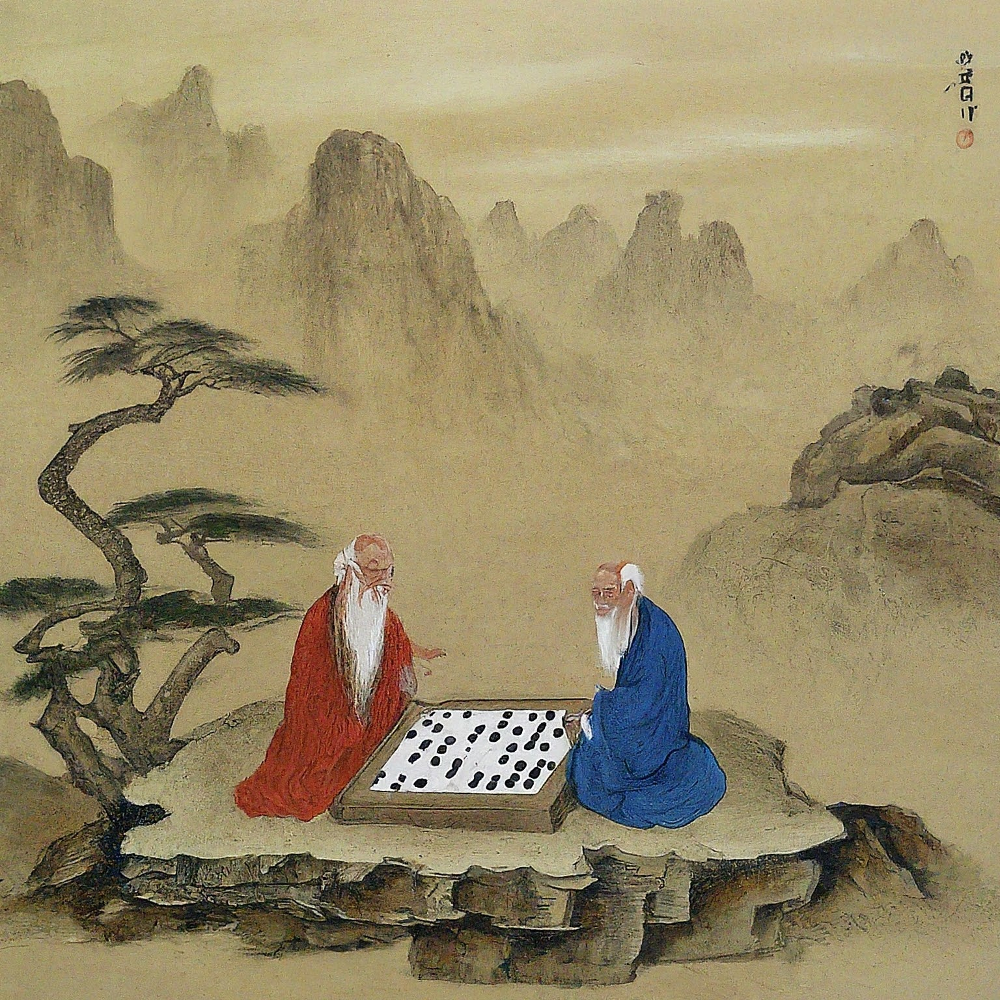
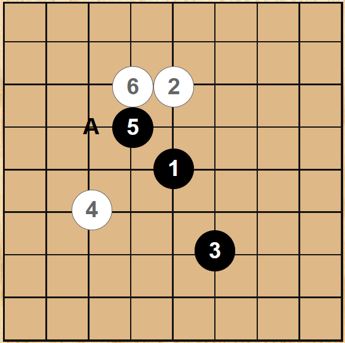

|  Komi Deciding Match |
Player A 9p Player B 8p Reviewed by Monteo da Westi 2d, A Master of Go 9p, and Gemini AI |
|  | In 9 × 9 Go, the best opening is always on the fourth to the fifth lines. |
| 1 is ready to create outside influence if Black is attacked at triangle. This is a good move for the high komi games (e.g., 6). For higher komi, 7 points or more, only Tengen is the best opening. | |
| Good. |